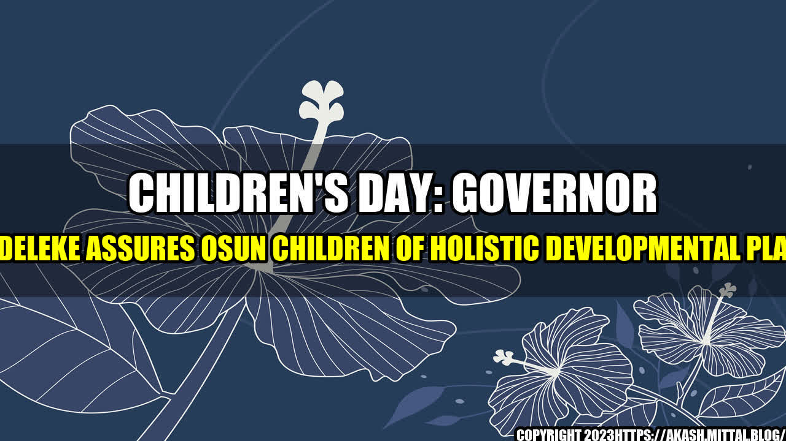

Children's Day: Governor Adeleke Assures Osun Children of Holistic Developmental Plan

Every child deserves the best possible start in life. Unfortunately, not all children are given the opportunity to thrive and reach their full potential. This is why it is crucial for leaders to prioritize the well-being and development of their youngest citizens.
In Osun State, Nigeria, Governor Adeleke is committed to ensuring that every child is given the chance to flourish. As he addressed children in the state during the 2021 Children's Day celebration, he assured them of his administration's holistic developmental plan.
"My dear children, I want you to know that your future is my priority. I am committed to creating an environment where you can grow, learn, and become the best versions of yourselves," Governor Adeleke said.
Osun State's Holistic Developmental Plan for Children
Actions speak louder than words, and Governor Adeleke's administration has taken concrete steps to support children's development. Here are some quantifiable examples of their efforts:
- Free Education: The Osun State government provides free education to all children in public schools, from primary to secondary level. This initiative has increased enrollment rates and improved access to quality education for thousands of children.
- Healthcare: Governor Adeleke's administration is committed to ensuring that children have access to quality healthcare. The government has renovated and equipped primary health centers across the state to provide free medical care to children under the age of 5.
- Youth Empowerment: The government has put in place numerous programs to empower young people, including skills training, entrepreneurship, and talent development initiatives. These efforts are aimed at preparing children for a brighter future and reducing the youth unemployment rate in the state.
The Importance of Prioritizing Children's Development
Investing in the well-being and development of children is crucial for several reasons:
- Children are the future of any nation. By prioritizing children's development, we can ensure that our future is bright and prosperous.
- Children who receive a good education and healthcare are more likely to grow up to be productive and healthy members of society.
- Empowering young people with skills and knowledge is key to reducing poverty and unemployment rates, as they will be able to create their own jobs and contribute to the economy.
Conclusion
As we celebrate Children's Day, let us remember that our youngest citizens are the future. By investing in their well-being and development, we are securing a brighter tomorrow for all. Governor Adeleke's holistic developmental plan for children in Osun State is a step in the right direction, and we hope to see more leaders prioritize children's development in the years to come.
References and Hashtags
- Osun State Government: https://osun.gov.ng/
- #ChildrensDay #ChildDevelopment #YouthEmpowerment #EducationForAll
- Category: Child Development
Curated by Team Akash.Mittal.Blog
Share on Twitter Share on LinkedIn